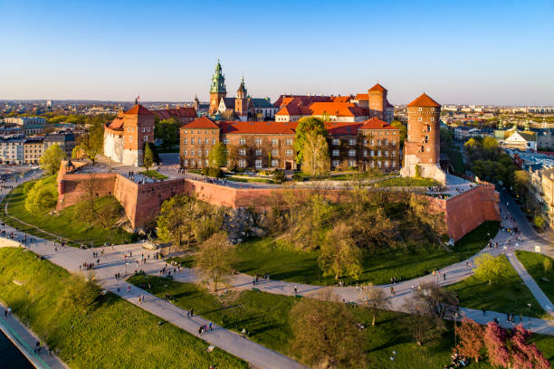
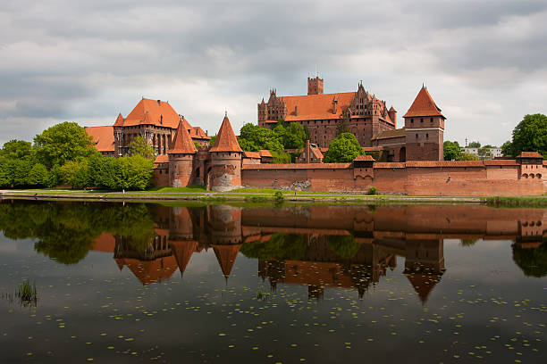
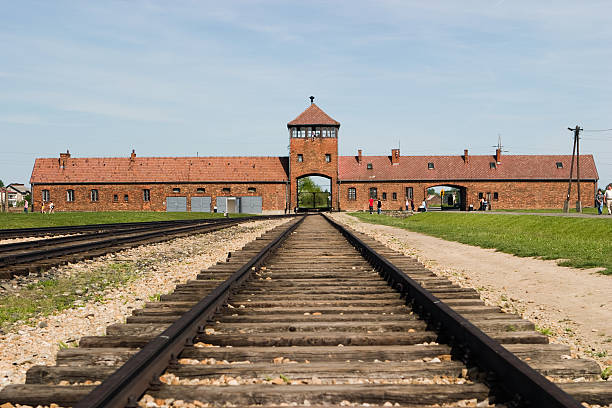
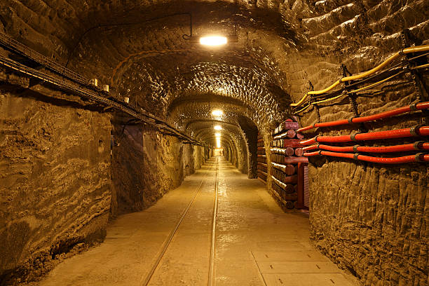
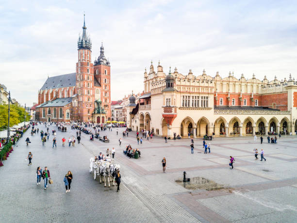
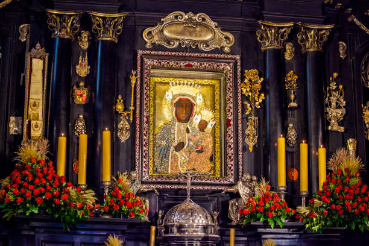
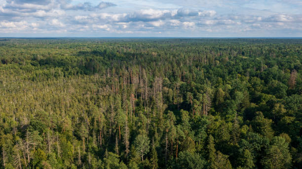

Landmarks
Explore some of the main historical and cutlural points of interest across the country.
Wawel Castle
Wawel Castle is a cultural and historical treasure located in Krakow, and it served as the residence of Polish kings for centuries. The castle complex includes the iconic Wawel Cathedral, where Polish monarchs were crowned and buried. A standout feature is the Sigismund Bell, one of the largest bells in Europe. The castle's architecture reflects various styles, from Romanesque to Baroque, and its art collections include priceless tapestries and the famous Wawel Dragon legend.
Wawel Castle, Krakow
Malbork Castle
This sprawling fortress, built by the Teutonic Knights in the 13th century, is the largest brick castle in the world. It served as the capital of the Teutonic Order and remains a masterpiece of Gothic architecture. Visitors can explore the castle's vast network of rooms, chapels, and fortifications while learning about its medieval history. A highlight is the High Castle, which houses a museum with artefacts, weaponry, and medieval art.
Malbork Castle, Malbork
Auschwitz-Birkenau Memorial and Museum
Located near Oswiecim, this UNESCO World Heritage Site serves as a solemn reminder of the Holocaust. The memorial comprises two main camps: Auschwitz I, with its infamous "Arbeit macht frei" gate, and Auschwitz II-Birkenau, known for its vast expanse and railway tracks leading to the extermination site. Visitors can see barracks, personal belongings of victims, and poignant exhibits that honour the memory of those who perished.
Auschwitz-Birkenau Memorial and Museum, Oswiecim, Lesser Poland
Wieliczka Salt Mine
The Wieliczka Salt Mine is an underground marvel, featuring over 300 kilometres of tunnels, chambers, and chapels carved entirely out of salt. Operating for centuries, the mine is a testament to Poland’s industrial heritage. Highlights include the breathtaking Chapel of St. Kinga, where everything, from chandeliers to sculptures, is made of salt. The mine also features underground lakes and stunning salt crystal formations.
Wieliczka Salt Mine, Wieliczka
Krakow Old Town and Main Market Square
Krakow's Old Town is a UNESCO-listed gem, boasting the largest medieval market square in Europe. The square is surrounded by historic buildings like St. Mary’s Basilica, with its striking twin towers and the hourly trumpet call (Hejnał Mariacki). At the heart of the square stands the Cloth Hall, a Renaissance-era market building where you can shop for souvenirs and local crafts. The Old Town’s charm is amplified by cobblestone streets, horse-drawn carriages, and vibrant street performers.
Krakow Square, Krakow
Jasna Gora Monastery
A spiritual heart of Poland, Jasna Góra Monastery is home to the revered Black Madonna of Częstochowa, a painting believed to have miraculous powers. The monastery attracts millions of pilgrims annually and is a symbol of Polish faith and resilience, especially during the Swedish Deluge in the 17th century. The Tower of Jasna Góra, standing at 106 metres, offers panoramic views of the surrounding area.
Jasna Góra Monastery, Częstochowa
Białowieża Forest
One of Europe’s last primeval forests, Białowieża is a UNESCO World Heritage Site that spans Poland and Belarus. The forest is home to the European bison, the continent’s heaviest land animal, and a wide variety of other wildlife. Visitors can hike through ancient woodlands, explore the strict reserve area with a guide, or visit the Białowieża National Park Museum to learn about the forest's ecological significance and conservation efforts.
Lech Wałęsa giving autographs